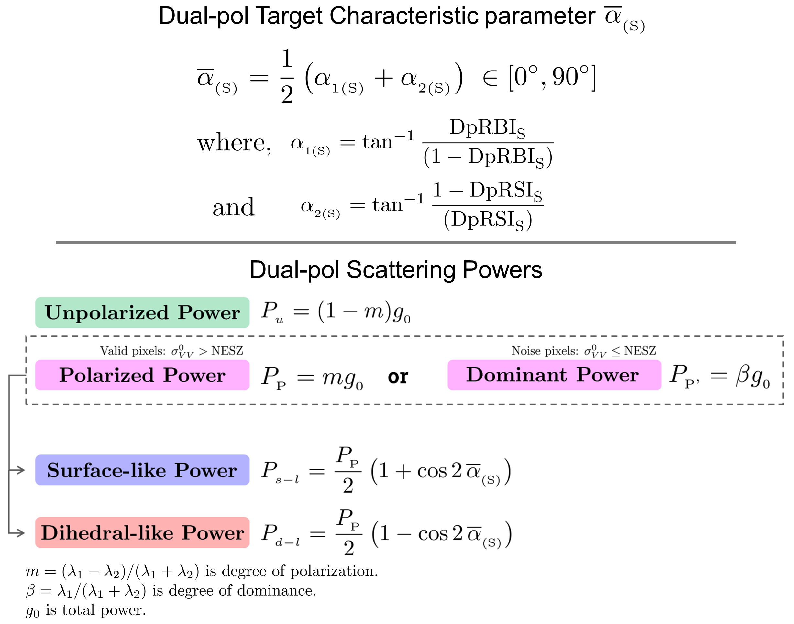
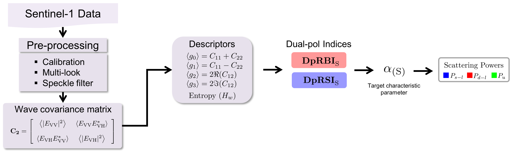

| Dual-pol Scattering Powers (Decomposition) Generation | |

Microwave Remote Sensing Lab (MRSLab)
Indian Institute of Technology Bombay, India
Contributors: Dr. Abhinav Verma et al.
Tel: +91-22-2576-7677
Date: 02 Feb 2026
E-mail: mrscsre@gmail.com; averma.iirs@gmail.com
URL: http://www.mrslab.in
The dual-pol scattering powers (decomposition method) are calculated from the processed dual-pol 2x2 wave covariance C2 matrix.
This method is based on the two dual-pol indices: DpRBI and DpRSI. First, a dual-pol target characteristic parameter is computed using DpRBI and DpRSI. It varies between 0° and 90°, with low values close to 0° indicating "surface-like" targets, high values close to 90° describing "dihedral-like", and intermediate values close to 45° representing mixed targets [1].
Subsequently, the degree of polarization and target characteristic parameter are together employed to split the total power into "Dihedral-like" (Pd-l), "Surface-like" (Ps-l), unpolarized (Pu) component as shown in the figure below and in [1].
It is important to note that hills or mountains facing the radar produce strong backscatter and are often confused with built-up areas, resulting in high DpRBI values. Therefore, we employ a slope layer to mask such areas to avoid misinterpretations over such areas. Please include a slope layer along with the C2 matrix (Raster -> DEM Tools -> Compute Slope and Aspect).

A schematic flowchart to compute dual-pol scattering power components using decomposition method is shown below [1]:

GPT operator: DualPol-Powers-Decomposition. Generated from the operator source; parameter names are those used in GPT and graph XML.
| Parameter | Type | Default | Allowed values | Unit | Description |
|---|---|---|---|---|---|
windowSize | int | 5 | 3, 5, 7, 9, 11, 13, 15, 17, 19 | Window Size | |
NESZ | double | -16.0 | Threshold (dB) applied to the C11 intensity: pixels with C11 above it use the signal formula, pixels at or below it are treated as noise-dominated and use the noise formula. Set to the sensor noise floor (NESZ), e.g. S1 IW ~ -22, S1 EW ~ -19, RCM ~ -25, NISAR ~ -25. |